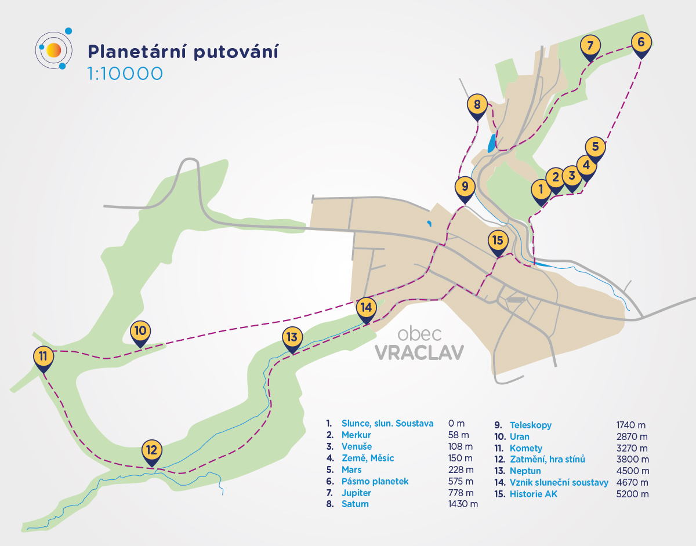

Planetární stezka Vraclav
Projděte Sluneční soustavu během vycházky.
Planetární stezka propojuje krajinu, astronomii a místní astronomický příběh. Web vychází přímo z vizuálního stylu hotových panelů, aby návštěvník dostal stejný zážitek online i na trase.
Proč stezka vzniká
Popularizace astronomie zasazená přímo do krajiny.
Projekt navazuje na dlouholetou činnost místního astronomického klubu, který od roku 1977 pořádá programy pro děti, mládež i veřejnost. Stezka převádí poměry velikostí a vzdáleností planet do skutečné krajiny a doplňuje je o panely s tématy jako komety, zatmění nebo vznik Sluneční soustavy.
Vizuální princip webu
Návrh se inspiruje osvědčenou strukturou planetárních stezek: jasný začátek u Slunce, čitelná mapa, sekvence zastavení a kombinace popularizačního obsahu s rodinně přístupnou navigací.
- barevnost převzatá z panelů a pozadí projektu
- velké náhledy reálných panelů místo ilustračních maket
- rychlý přehled trasy pro výlet i školní skupiny
Trasa a orientace
Jedna trasa, patnáct zastavení.

Jak je stezka koncipovaná
Naučné panely s planetami jsou rozmístěné v přesném poměru zmenšení, a to jak velikostí, tak vzdáleností od Slunce. Každé stanoviště kombinuje informace, mapku trasy, QR kód a výraznou grafiku z panelové řady.
58 m
Merkur od Slunce
780 m
Jupiter od Slunce
4,5 km
Neptun od Slunce